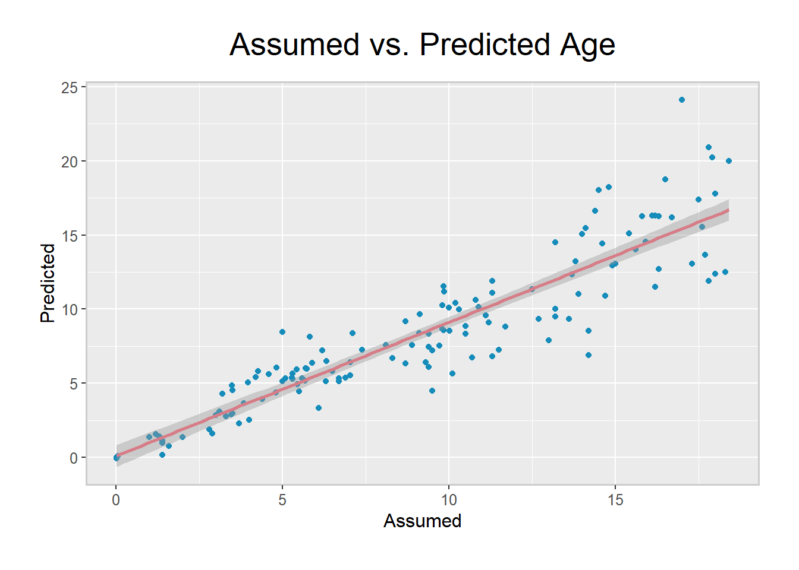
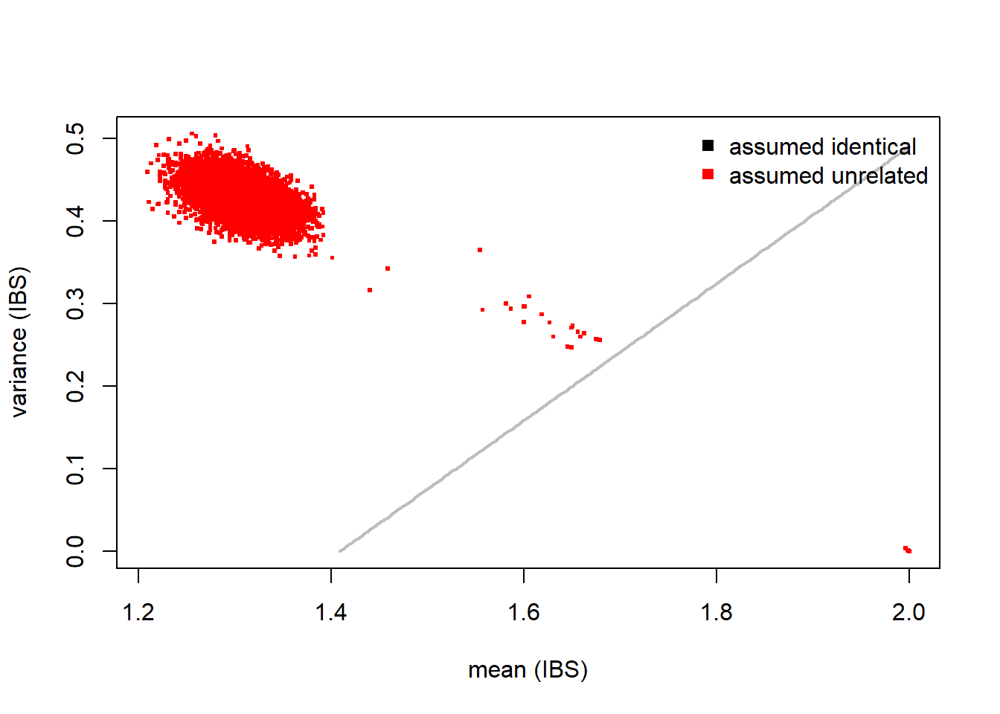

Methylation profiles often contain multiple missing values, which can be assumed to be missing at random (MAR), since they are likely due to random experimental and technology-related errors, rather than associated with methylation status.
Imputation of these values is beneficial for multiple algorithms, but its importance is highlighted in the use of predictors that rely on values from only a subset of CpGs. In these instances, the effect of a few missing sites could vastly alter estimated age, for example.
DNA methylation values represent a limited-range continuous variable, for which many standard imputation methods are theoretically suitable. However, they struggle with larger datasets due to a lack of computational efficiency. For this reason, specific strategies have been developed to handle missing methylation data (Mazumder et al. 2010, Josse and Husson (2012), Di Lena et al. (2019)).
The method that we advise using is MethyLImp (Di Lena et al. 2019), and we are in the process of developing a parallelized version of this for DNAmArray. This iterative algorithm exploits the high inter-sample correlation seen in methylation data (L. Zhang et al. 2017), capturing it using linear regression. This method is both computationally efficient and has been shown to perform better than all current alternatives, whilst not requiring post-imputation truncation (Di Lena et al. 2019).
Until the parallelized version is available, we advise using imputePCA() from missMDA (Josse and Husson 2012). This performs well for its small computation time, and does not suffer from the beta-value bias that impute.knn() has been shown to (Di Lena et al. 2019).
sum(is.na(betas))## [1] 42832After filtering and preprocessing, our beta-value matrix has 42,832 missing values. Using the code below, we can impute them by implementing a low-rank approximation version of the iterative EM-PCA algorithm (Dempster, Laird, and Rubin 1977). Since this function can impute values outside the [0,1] range of beta-values, we apply a simple post-imputation truncation of the overflowed values. This has been shown not to significantly affect the accuracy (Di Lena et al. 2019).
library(missMDA)
betas <- imputePCA(betas)
betas <- betas$completeObs
betas[betas<0] <- 0
betas[betas>1] <- 1It can be useful to predict phenotypes in your data, either for comparison to assumed categories or to help impute missing values. We are in the process of creating predictors for sample cell composition, sex, age, and smoking status. These will either be reference-based predictors using the large BIOS data, which includes samples from 6 dutch cohorts and over 4000 individuals, or ones built using reference-free or semi-supervised methods.
When created and distributed within this package, you will be able to use them to predict phenotypes in your own datasets. Meanwhile, below some current methods are describe to predict phenotypes in your data.
White blood cell count can be predicted using Houseman’s partial least squares method (Houseman et al. 2012) implemented in minfi (Aryee et al. 2014) by the estimateCellCounts() function. This implements a calibration algorithm for deconvoluting heterogenous tissue sources, such as blood, and returns a matrix of composition estimates across all samples and cell types.
The DNAmArray package contains a getSex.DNAmArray() function, which predicts the sex of your observations by inspecting intensities of X-chromosome signals. We use the getBeta() function from minfi as before to get the beta-value matrix and then use this to predict sex. Since some filtered probes may be used by the sex prediction function, we recalculate the beta matrix before prediction.
betas_sex <- getBeta(RGset)
mid <- match(colnames(betas_sex), targets$Basename)
predictedSex <- as.factor(getSex.DNAmArray(betas_sex))
assumedSex <- targets$sex[mid]
table(predictedSex, assumedSex)## assumedSex
## predictedSex Female Male
## Female 55 0
## Male 0 83As you can see, this is complete data, but the predicted and assumed sexes are identical. This means that we can feel increased confidence that no incorrect labelling or mix-ups are present in this variable.
Age can be predicted using Horvath’s or Hannum’s coefficients with agep() from wateRmelon. If you use Hannum’s, you will need to call the coefficients using data(hannumCoef) before prediction. The predicted and assumed ages are then combined into a data frame that can be used to visualize the results.
library(wateRmelon)
predictedAge <- as.numeric(agep(betas, method="horvath"))
assumedAge <- as.numeric(targets$age[mid])
ages <- data.frame(Assumed=assumedAge, Predicted=predictedAge)
head(ages)## Assumed Predicted
## 1 17.3 13.072017
## 2 11.3 6.820242
## 3 9.5 4.511927
## 4 15.0 13.046026
## 5 6.7 5.324749
## 6 8.3 6.697246ggplot(ages, aes(x=Assumed, y=Predicted)) + ggtitle("Assumed vs. Predicted Age") + th3 +
geom_point(shape=16, color="#158cba") + geom_smooth(method=lm, color="#D67D87")
The above graph shows that this prediction follows the general trend of the assumed ages, however the residuals are quite large. It may be possible to develop an improved predictor (Q. Zhang et al. 2018), and we plan to implement this.
RangedSummarizedExperimentMoving further into the pipeline, it will be necessary to have our methylation data stored in a RangedSummarizedExperiment class object. Designed to handle microarray data, this class stores observations from multiple samples alongside relevant meta-data, and ensures that both features and phenotypes are kept in-sync when subsetting.
This matrix-like container is organised with rows representing features, such as genes or exons, which can be accessed using rowRanges(). This function calls a GRanges object describing features and their attributes. The columns of the RangedSummarizedExperiment store information about each sample, and this can be accessed using colData().
Lastly, each assay is represented in the third dimension of this matrix-like object and can be shown using the assays() function. Meta-data is then linked to this combination of data frames, and can be accessed with the metadata() command.
RangedSummarizedExperimentThe FDb.InfiniumMethylation.hg19 package contains probe annotations, which can be extracted using the getPlatform() function. To ensure that we apply the previous probe filtering, we use match() to keep only the relevant information.
library(FDb.InfiniumMethylation.hg19)
rowRanges <- getPlatform(platform="HM450", genome="hg19")## Fetching coordinates for hg19...rows <- match(rownames(betas), names(rowRanges))
rowRanges <- rowRanges[rows]
rowRanges[,3:4]## GRanges object with 423586 ranges and 2 metadata columns:
## seqnames ranges strand | channel platform
## <Rle> <IRanges> <Rle> | <Rle> <Rle>
## cg01707559 chrY 6778695-6778696 * | Red HM450
## cg03244189 chrY 21238472-21238473 * | Grn HM450
## cg04792227 chrY 17568097-17568098 * | Red HM450
## cg14180491 chrY 15016705-15016706 * | Grn HM450
## cg25032547 chrY 14773536-14773537 * | Red HM450
## ... ... ... ... . ... ...
## ch.22.44116734F chr22 45738070 * | Both HM450
## ch.22.909671F chr22 46114168 * | Both HM450
## ch.22.46830341F chr22 48451677 * | Both HM450
## ch.22.1008279F chr22 48731367 * | Both HM450
## ch.22.47579720R chr22 49193714 * | Both HM450
## -------
## seqinfo: 24 sequences from hg19 genomeNow that we have our annotations, we can combine them with our data using the SummarizedExperiment package. After ensuring that any column subsetting is accounted for, we extract the colData() from our RGset. Finally, the beta values, probe annotations, and sample information are combined into a RangedSummarizedExperiment object using the SummarizedExperiment() function.
library(SummarizedExperiment)
cols <- match(colnames(betas), colnames(RGset))
colData <- DataFrame(colData(RGset[, cols])@listData)
methData <- SummarizedExperiment(assays=SimpleList(betas=betas),
rowRanges=rowRanges,
colData=colData)
methData## class: RangedSummarizedExperiment
## dim: 423586 138
## metadata(0):
## assays(1): betas
## rownames(423586): cg01707559 cg03244189 ... ch.22.1008279F
## ch.22.47579720R
## rowData names(10): addressA addressB ... probeEnd probeTarget
## colnames(138): GSM3092700_9985178096_R01C01
## GSM3092701_9985178127_R03C02 ... GSM3093566_9020331152_R05C01
## GSM3093567_9020331152_R06C01
## colData names(35): title public_date ... Basename filenamesBeta-values of the probes containing SNPs can be extracted from the RGset using minfi’s getSnpBeta function. These can then be converted to alleles using k-means clustering using the genki() function from wateRmelon. This function returns values of disperson for each of three genotype peaks (AA, AB, and BB). which can be used as a performance metric since technical variation would decrease the tightness of the genotypic peaks.
library(wateRmelon)
snpBetas <- getSnpBeta(RGset)
snpBetasVar <- genki(snpBetas)omicsPrint (Van Iterson et al. 2018) is a package we developed to detect data linkage errors through inspecting sample relations in multiple omics studies. This example uses data where individuals are unrelated, but if you have data on twins, for example, it would detect that and also show any mismatches.
Included with the package is the hm450.manifest.pop.GoNL data, which stores SNP probe information in a GRanges class object. This is then used to create a subset of the beta values for genotyping.
library(omicsPrint)
data(hm450.manifest.pop.GoNL)
cpgs <- names(hm450.manifest.pop.GoNL[mcols(hm450.manifest.pop.GoNL)$MASK.snp5.EAS])
cpgs <- na.omit(match(cpgs, rownames(betas_sex)))
omicsBetas <- betas_sex[cpgs,]
omicsBetas[1:10, 1:2]## GSM3092700_9985178096_R01C01 GSM3092701_9985178127_R03C02
## cg08477687 0.57171216 0.57340242
## cg00645010 0.24643615 0.32681420
## cg11422233 0.14063955 0.13474866
## cg06402284 0.06962435 0.08141825
## cg01551879 0.03872920 0.04622407
## cg20788133 0.80971844 0.83957784
## cg09139287 0.56352808 0.32561464
## cg23100540 0.32947931 0.38723776
## cg23999112 0.75425515 0.76118107
## cg01062849 0.90289728 0.90511892The function beta2genotype() then genotypes the observations by measuring homozygous or heterozygous alleles at these SNP probes. Lastly alleleSharing() assesses the relationships between different individuals, which can be unrelated, twins, or identical. The results can then be visualised using the inferRelations() function.
dnamCalls <- beta2genotype(omicsBetas, assayName="exprs")
dim(dnamCalls)## [1] 750 138dnamCalls[1:10, 1:2]## GSM3092700_9985178096_R01C01 GSM3092701_9985178127_R03C02
## cg12213037 2 3
## cg19405842 2 1
## cg01296877 2 3
## cg21783012 2 2
## cg10091792 3 3
## cg04882216 3 3
## cg26422465 2 1
## cg00345083 2 2
## cg15075357 1 1
## cg13928473 1 3omicsData <- alleleSharing(dnamCalls, verbose=TRUE)## Hash relations## Pruning 750 SNPs ...## 0 SNPs removed because of low call rate!## 0 samples removed because too few SNPs called!## Using 750 polymorphic SNPs to determine allele sharing.## Running `square` IBS algorithm!## 139 of 9591 (1.45%) ...## 8851 of 9591 (92.28%) ...mismatches <- inferRelations(omicsData)
Since there are no twins or relatives in our data, all observations are shown as unrelated. In data with sample relationships, this would be shown in the above graph as green or black clusters (Van Iterson et al. 2018). It is important to carry out this type of visualization before probe-filtering as otherwise the genotyping will be based on very few SNPs.
Aryee, Martin J., Andrew E. Jaffe, Hector Corrada-Bravo, Christine Ladd-Acosta, Andrew P. Feinberg, Kasper D. Hansen, and Rafael A. Irizarry. 2014. “Minfi: A flexible and comprehensive Bioconductor package for the analysis of Infinium DNA methylation microarrays.” Bioinformatics 30 (10). Oxford University Press: 1363–9. doi:10.1093/bioinformatics/btu049.
Dempster, A P,; N M Laird, and; D B Rubin. 1977. “Maximum Likelihood from Incomplete Data via the EM Algorithm.” 1. Vol. 39. http://web.mit.edu/6.435/www/Dempster77.pdf.
Di Lena, Pietro, Claudia Sala, Andrea Prodi, and Christine Nardini. 2019. “Missing value estimation methods for DNA methylation data.” Edited by Jonathan Wren. Bioinformatics, February. doi:10.1093/bioinformatics/btz134.
Houseman, Eugene Andres, William P Accomando, Devin C Koestler, Brock C Christensen, Carmen J Marsit, Heather H Nelson, John K Wiencke, and Karl T Kelsey. 2012. “DNA methylation arrays as surrogate measures of cell mixture distribution.” BMC Bioinformatics 13 (1). BioMed Central: 86. doi:10.1186/1471-2105-13-86.
Josse, Julie, and François Husson. 2012. “Handling missing values in exploratory multivariate data analysis methods.” https://hal.archives-ouvertes.fr/hal-00811888.
Mazumder, Rahul, Trevor Hastie, Hastie@stanford Edu, Robert Tibshirani, Tibs@stanford Edu, and Tommi Jaakkola. 2010. “Spectral Regularization Algorithms for Learning Large Incomplete Matrices.” Vol. 11. https://web.stanford.edu/{~}hastie/Papers/mazumder10a.pdf.
Van Iterson, Maarten, Davy Cats, Paul Hop, and Bastiaan T Heijmans. 2018. “OmicsPrint: Detection of data linkage errors in multiple omics studies.” Edited by Oliver Stegle. Bioinformatics 34 (12). Oxford University Press: 2142–3. doi:10.1093/bioinformatics/bty062.
Zhang, Ling, Wen Jun Xie, Sirui Liu, Luming Meng, Chan Gu, and Yi Qin Gao. 2017. “DNA Methylation Landscape Reflects the Spatial Organization of Chromatin in Different Cells.” Biophysical Journal 113 (7). The Biophysical Society: 1395. doi:10.1016/J.BPJ.2017.08.019.
Zhang, Qian, Costanza L. Vallerga, Rosie M Walker, Tian Lin, Anjali K. Henders, Grant W. Montgomery, Ji He, et al. 2018. “Improved prediction of chronological age from DNA methylation limits it as a biomarker of ageing.” bioRxiv, October. Cold Spring Harbor Laboratory, 327890. doi:10.1101/327890.